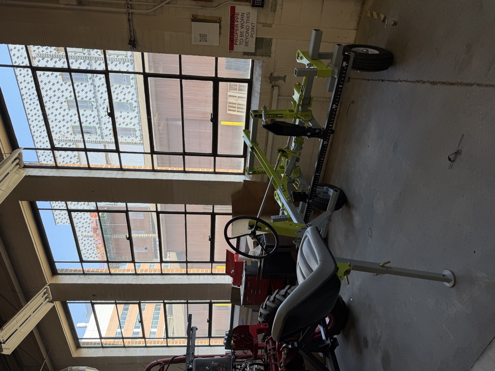

Auto-Steering Cultivator
Autonomous, vision-guided steering retrofit for a Tilmor steerable cultivator

Why
Mechanical weeding requires precise intra-row steering — but existing cultivators depend entirely on operator skill, and a wrong move damages crops. This retrofit brings autonomous, vision-guided steering to a Tilmor steerable cultivator, targeting 1-2cm intra-row accuracy through a distributed CAN-bus control architecture rather than a single monolithic controller.
Which
🔧 Mechanical
⚡ Electrical & Power
💻 Embedded & Control
Wrinkles
Drivetrain Slack Was Corrupting the Steering Loop
Challenge — Closing the steering loop off the motor shaft encoder baked drivetrain slack and backlash directly into the position feedback.
Solution — Moved position feedback to an external Hall-effect angle sensor mounted on the steered element itself, decoupling the control loop from drivetrain error.
Layered Safety for a Machine Operating Unattended in a Field
Challenge — A single point of failure in steering control near people or equipment is unacceptable.
Solution — Defense-in-depth architecture: software soft limits, mechanical hard stops, driver-level overcurrent/thermal protection, and independent emergency stop systems, each capable of stopping the system on its own.
Wins
In progress. Hardware bring-up and validation completed to date: DC motor characterization and stall-current/protection-circuit testing on a programmable bench power supply, and a ROS2/Gazebo simulation environment mirroring the physical dual-CAN-bus architecture (via SocketCAN) for hardware-in-the-loop-style testing ahead of field deployment. A technical writeup covering the system and a comparative analysis against existing commercial mechanical weed-control solutions is also underway.